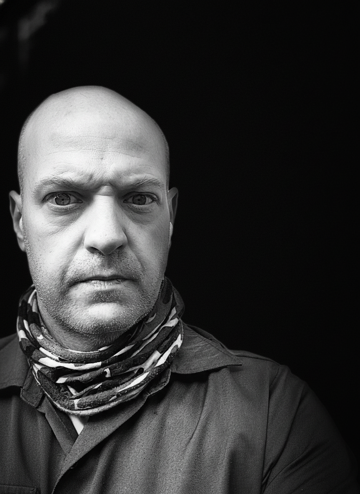

IMG_7007_Original.jpeg
Multi-LLM Analysis
71.5/100
Consensus Score
Original Review
The image has a strong, stark contrast which is effective, but the subject's face is a bit underexposed, losing some detail. Adjusting exposure and adding a vignette would enhance the dramatic mood while improving clarity.
- Increase exposure slightly to reveal more detail in the shadows on the subject's face.
- Apply a subtle vignette to darken the extreme edges and draw more focus to the subject.
- Consider a slight crop from the right to center the subject's eye more prominently, aligning with the rule of thirds.
Analysis failed: Error code: 401 - {'error': {'message': 'Incorrect API key provided: sk-proj-********************************************************************************************************************************************************98YA. You can find your API key at https://platform.openai.com/account/api-keys.', 'type': 'invalid_request_error', 'code': 'invalid_api_key', 'param': None}, 'status': 401}
Strong dramatic portrait with excellent composition and mood. The black and white treatment works well, but the image suffers from underexposure that loses detail in shadows and creates overly harsh contrast that could be balanced for better impact.
- Add subtle fill light to brighten the shadow areas under the eyes and reduce harsh contrast
- Increase overall exposure by 15-20% to reveal more detail in the darker areas
- Apply gentle noise reduction to smooth skin texture while preserving facial details
Combined Improvements Applied:
- Increase exposure slightly to reveal more detail in the shadows on the subject's face.
- Apply a subtle vignette to darken the extreme edges and draw more focus to the subject.
- Consider a slight crop from the right to center the subject's eye more prominently, aligning with the rule of thirds.
- Add subtle fill light to brighten the shadow areas under the eyes and reduce harsh contrast
- Increase overall exposure by 15-20% to reveal more detail in the darker areas
- Apply gentle noise reduction to smooth skin texture while preserving facial details
- Enhance contrast selectively in the eyes to make them more compelling
Before & After Comparison